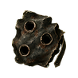
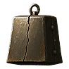
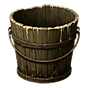
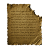
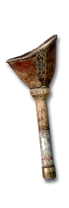
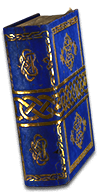

There is no cow level. There is Moo Less Pasture: no waypoint and no stairs lead to it, only the Horadric Cube.
1The way in
Cube 12 Gutted Scraps for one cow relic; each of the three is equally likely. The Claw of Prising leaves a Gutted Scrap each time it empties a socketed item.
- 12 Gutted Scraps

Gutted Scrap- Pale Bovine
- 1 kill in 50
- Claw of Prising
- 1 per emptied item
- Horadric Cube

Cracked Cowbell
Pail of Soured Milk
Torn Page- Each relic
- 1 in 3
- Wirt's Leg

Wirt's Leg - Tome of Town Portal

Tome of Town Portal - Horadric CubeOne of each relic, Wirt's Leg and the Tome, in Harrogath, any difficulty: a red portal opens
- Moo Less PastureMonster level Normal 68 · Nightmare 92 · Hell 109
Cube one of each relic with Wirt's Leg and a Tome of Town Portal in Harrogath, in any difficulty. All five are used up, and a red portal opens.
2Moo Less Pasture
Monster level in Hell109Normal 68 · Nightmare 92
WaypointNonethe red portal only
A field of fences, corrals, cottages and ponds under a thick blue fog. Unlike the Cow King, killing The Pail Cow King locks nothing: bring another set of relics and fight him again.
3The herd
Resists in HellPhysical 50%Magic 33%Fire 50%Lightning 50%Cold 50%Poison 33%
Each kill1 in 50a Gutted Scrap
Packs of Pale Bovine fill the pasture: ghostly Hell Bovines, half again their size, hitting with physical and cold damage. They count as demons, so Bind Demon can take them. Each one drops a Gutted Scrap 1 kill in 50, as well as a Hell Bovine's loot.
Resists by difficulty
| Resists | Physical | Magic | Fire | Lightning | Cold | Poison |
|---|
| Normal | 0% | 0% | 0% | 0% | 0% | 0% |
| Nightmare | 33% | 15% | 25% | 25% | 25% | 25% |
| Hell | 50% | 33% | 50% | 50% | 50% | 33% |
4The Pail Cow King
Monster level in Hell110Normal 71 · Nightmare 95
Resists in HellPhysical 50%Magic 33%Fire 0%Lightning 0%Cold 0%Poison 33%
before Magic Resistant, Lightning and Cold Enchanted The Pail Cow King waits in the far stone circle, three times a Hell Bovine's size and gilded, at level 71, 95 and 110 in Normal, Nightmare and Hell. He is Magic Resistant, Lightning Enchanted and Cold Enchanted, which add to the resists below. He drops one of the items below at Hell · 100%, as well as the Cow King's loot. In Normal and Nightmare he drops the Cow King's loot.
Resists by difficulty
| Resists | Physical | Magic | Fire | Lightning | Cold | Poison |
|---|
| Normal | 0% | 0% | 0% | 0% | 0% | 0% |
| Nightmare | 33% | 15% | 0% | 0% | 0% | 25% |
| Hell | 50% | 33% | 0% | 0% | 0% | 33% |
5Bessie
Summon Bessie+3-5any class, from More Cowbell
More Cowbell
More Cowbell grants +3-5 to Summon Bessie, which any class can use. Bessie, a pale cow twice a cow's size, fights at your side until she dies; casting again replaces her.
6The drops
More Cowbell
Amulet
Required Level: 90
+2 to All Skills
+3-5 to Summon Bessie
+20% Faster Cast Rate
Increase Maximum Life 10%
Level 8 Holy Freeze Aura When Equipped
All Resistances +20
+1 to Light Radius
Needs more cowbell.
The Hooves
Ruminant Talons
Required Level: 90
+2 to Assassin Skill Levels
+3-5 to Dragon Talon (Assassin Only)
+90-127 Kick Damage
+320-370% Enhanced Damage
+30% Increased Attack Speed
+25% Chance of Crushing Blow
+25-30% Deadly Strike
6-8% Life stolen per hit
Knockback
All Resistances +20-25
Clip-clop. Clip-clop. Thud.
Udder Destruction
Cow Maul
Required Level: 90
+360-400% Enhanced Damage
+40% Increased Attack Speed
15% Chance to cast level 20 Shock Wave on striking
+50% Chance of Crushing Blow
+25% Deadly Strike
8% Life stolen per hit
+25-30 to Strength
Knockback
All Resistances +20
Indestructible
Udderly devastating.
Raise the Steaks
Bovine Wand
Required Level: 90
+3 to Necromancer Skill Levels
+4-6 to Raise Skeleton (Necromancer Only)
+3-4 to Skeleton Mastery (Necromancer Only)
+2-3 to Raise Skeletal Mage (Necromancer Only)
Level 10-12 Might Aura When Equipped
20% Reanimate as: Pale Bovine
+30% Faster Cast Rate
Increase Maximum Mana 20%
All Resistances +20-25
Rare, medium or well done.
The Moo-nomicon
Blasphemous Grimoire
Required Level: 90
+3 to Warlock Skills
+4-6 to Bind Demon (Warlock Only)
+3-4 to Demonic Mastery (Warlock Only)
+30% Faster Cast Rate
Increase Maximum Mana 20%
All Resistances +20-25
The binding rite begins: Moo.
The Milky Way
Dairy Shard
Required Level: 90
+3 to Sorceress Skill Levels
+3-4 to Frozen Orb (Sorceress Only)
+2 to Cold Mastery (Sorceress Only)
+15% to Cold Skill Damage
-20% to Enemy Cold Resistance
+30% Faster Cast Rate
All Resistances +20
Full of stars. And calcium.
Steak Knife
Sirloin Spike
Required Level: 90
+3 to All Skills
+30% Faster Cast Rate
+25% Chance of Open Wounds
+15-20 Life after each Kill
+20% Increased Attack Speed
All Resistances +20
Cuts against the grain.
The Butter Knife
Butter Blade
Required Level: 90
+3 to All Skills
+30% Faster Cast Rate
-(10-15)% to Enemy Fire Resistance
-(10-15)% to Enemy Cold Resistance
-(10-15)% to Enemy Lightning Resistance
-(10-15)% to Enemy Poison Resistance
Indestructible
Goes through them like butter.
Holy Cow
Cowduceus
Required Level: 90
Level 15-17 Fanaticism Aura When Equipped
+3 to Paladin Skill Levels
+3-4 to Zeal (Paladin Only)
+300-340% Enhanced Damage
+30% Increased Attack Speed
+20% Chance of Crushing Blow
All Resistances +20
Holy cow.
Sir Loin's Blade
Cowlossus Blade
Required Level: 90
Level 15 Might Aura When Equipped
+380-420% Enhanced Damage
+30% Increased Attack Speed
+30% Chance of Crushing Blow
+30% Deadly Strike
8% Life stolen per hit
All Resistances +20
Knighted for services to beef.
The Herdsman's Crook
Shepherd Staff
Required Level: 90
+3 to Druid Skill Levels
+3-4 to Summon Grizzly (Druid Only)
+2-3 to Oak Sage (Druid Only)
15% Reanimate as: Pale Bovine
+30% Faster Cast Rate
All Resistances +20
Every lost cow comes home.
Fresh Milk!
Decalfpitator
Required Level: 90
+360-400% Enhanced Damage
+30% Increased Attack Speed
+50% Chance of Open Wounds
+15-20 Life after each Kill
15% Chance to cast level 15 Battle Cry on striking
+25% Deadly Strike
All Resistances +20
Ah... fresh milk!
Wirt's Other Leg
Rump Truncheon
Required Level: 90
+300-340% Enhanced Damage
+40% Chance of Crushing Blow
Knockback
+30% Increased Attack Speed
10% Chance to cast level 1 Teleport when struck
100% Extra Gold from Monsters
All Resistances +20
He had two.
The Moo-er
Pasture Thresher
Required Level: 90
+360-400% Enhanced Damage
+30% Increased Attack Speed
10% Chance to cast level 15 Whirlwind on striking
+25% Chance of Crushing Blow
+25% Deadly Strike
8% Life stolen per hit
All Resistances +20
Keeps the pasture short.
Cattle Prod
Friesian Pike
Required Level: 90
+3-4 to Charged Strike (Amazon Only)
+300-340% Enhanced Damage
+30% Increased Attack Speed
15% Chance to cast level 20 Charged Bolt on striking
-15% to Enemy Lightning Resistance
Knockback
All Resistances +20
Moves the herd along.
Moo Point
Heiferion Javelin
Required Level: 90
+3 to Amazon Skill Levels
+3-4 to Lightning Fury (Amazon Only)
+300-340% Enhanced Damage
+30% Increased Attack Speed
+50% Piercing Attack
Replenishes quantity
All Resistances +20
It's like a cow's opinion.
The Long Horn
Cowdra Bow
Required Level: 90
+3 to Amazon Skill Levels
+3-4 to Strafe (Amazon Only)
+300-340% Enhanced Damage
+30% Increased Attack Speed
10% Chance to cast level 20 Multiple Shot on striking
+50% Piercing Attack
All Resistances +20
Texas sends its regards.
Bull's-Eye
Dairy Crossbow
Required Level: 90
+300-340% Enhanced Damage
250% Bonus to Attack Rating
+50% Deadly Strike
+3-4 to Guided Arrow (Amazon Only)
+30% Increased Attack Speed
All Resistances +20
Never misses the barn door.
Mooshroom
Winged Steak Knife
Required Level: 90
+300-340% Enhanced Damage
+300 poison damage over 4 seconds
15% Chance to cast level 15 Poison Nova on striking
-15% to Enemy Poison Resistance
Replenishes quantity
All Resistances +20
Do not ask where it came from.
Mad Cow
Destroyer Helm
Required Level: 90
+3 to Barbarian Skill Levels
+3-4 to Berserk (Barbarian Only)
+40% Increased Attack Speed
+30% Deadly Strike
All Resistances -30
-10 Defense
+30% Faster Run/Walk
It was perfectly calm a moment ago.
Bovine Intervention
Monarch
Required Level: 90
40% Increased Chance of Blocking
+40% Faster Block Rate
10% Chance to cast level 15 Holy Shield when struck
+150-200% Enhanced Defense
All Resistances +30
Physical Damage Received Reduced by 15%
Not today, demon.
The Ber Run
Small Charm
Required Level: 90
1% Better Chance of Getting Magic Items
Just one more run.
Udder Nonsense
Grand Charm
Required Level: 90
Rolls one of:
+1 to Teleport, -4 to Light Radius
+300 to Life, -20% Faster Run/Walk
+5 to All Skills, All Resistances -100
200% Extra Gold from Monsters, Drain Life 10
+50% Faster Run/Walk, -25 to Vitality
1% Chance to cast level 50 Nova on striking, -20% Increased Attack Speed
It made sense at the time.
Haute Cow-ture
Haute Cow-ture
2 pieces: 50% Better Chance of Getting Magic Items
3 pieces: All Resistances +20
4 pieces: +1 to All Skills
Full set: +2 to All Skills
Full set: 100% Better Chance of Getting Magic Items
Full set: 20% Reanimate as: Pale Bovine
Full set: Level 10 Holy Freeze Aura When Equipped
The Holy Cowl
Shako
Required Level: 85
+2 to All Skills
50% Better Chance of Getting Magic Items
+20% Faster Cast Rate
All Resistances +15
Moo-ve over, Harlequin.
Hide and Go Moo
Wyrmhide
Required Level: 85
+180-220% Enhanced Defense
Increase Maximum Life 10%
+30% Faster Hit Recovery
Physical Damage Received Reduced by 15%
All Resistances +20
Genuine leather.
Butterfingers
Vampirebone Gloves
Required Level: 85
+20% Increased Attack Speed
30% Better Chance of Getting Magic Items
5% Life stolen per hit
Knockback
+20 to Dexterity
Slippery when wet.
Beef Wellingtons
Myrmidon Greaves
Required Level: 85
+40% Faster Run/Walk
+30% Faster Hit Recovery
+50 Kick Damage
Cold Resist +30%
All Resistances +15
Pastry not included.
The Big Buckle
Spiderweb Sash
Required Level: 85
+20 to Strength
+60 to Life
30% Better Chance of Getting Magic Items
+15% Faster Cast Rate
All Resistances +15
Hold your horns.
Cracked Cowbell
Its clapper is long gone. It rings anyway.
Pail of Soured Milk
Even the flies will not touch it.
Torn Page
"...there is no co-" The rest has been chewed.